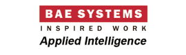

Opleiding
May 2016 - November 2016: Ontwikkelaar Mobiele Apps aan VDAB / Cevora door RealDolmen
Vakken:
- Android, iOS and Java Programming
- Java Persistence API
- Unit Testing with Java
- GoF Design Patterns
- HTML5, CSS3, JavaScript and AngularJS
- Java Servlets and JSP Programming
- Spring 4.0
- SQL
- Maven and Git
Projecten:
- Miniproject Mobile
- Miniproject Java
2003 - 2006:Professionele Bachelor in Toegepaste Informatica aan PXL Hasselt. Diploma behaald met onderscheiding.
Projecten:
Het bouwen van een website met behulp van Java servlets/Java beans voor Kinepolis met behulp van Oracle. Hiervoor heb ik een attest behaald voor projectwerking waar ik op geslaagd ben met grote onderscheiding. Stage te Robert Bosh Tienen, updaten van Intranet met behulp van ASP en programmeren in VB.net. Vakken: Netwerken, Cobol, VB.NET, Java, Oracle, C++, Systeemanalyse, Procedureel Programmeren, Web Design, Microsoft Office, ..
1999 - 2003: Economie-Wiskunde aan het Sint-Tarcisiusinstituut, Zoutleeuw.
Werk ervaring

04/2007- 02/2016 - Business Consultant in BAE Systems - Applied Intelligence te Heverlee, Leuven
Takenpakket:
Instaan voor het houden van scoping sessies bij de klant, de vereisten van de klant analyseren, documenteren en vertalen in taken voor het projectteam met behulp van de nodige tools en de taken verdelen over het team. Het aanmaken van testcases op basis van het document en het implementeren en testen van de wijzigingen samen met het team. Na de installatie bij de klant sta ik ook in voor de klantenondersteuning zowel tijdens het testen bij de klant als nadien. Het ondersteunen en trainen van nieuwe teamleden, zowel ervaren leden als beginners door expert te zijn in de aangeboden software. Databank : Aanmaken, wijzigen, raadplegen van complexe tabellen, views, functions, procedures, indexes voor de projecten in zowel Oracle, Teradata en SQL Server Databanken. Oplossingen zoeken voor performantie problemen.
| DnB Bank Noorwegen: | Opeenvolgende projecten voor de volgende software oplossingen:
|
|
| Rabobank Nederland: | Klant specifieke AML / WLM oplossing en een databasemigratie- project. | |
| Rabobank International: | Standaard WLM oplossing met klantspecifieke wijzigingen. | |
| BAE Systems - Madrid: | Teamleader, ondersteunen en trainen voor het implementeren van een nieuwe oplossing | |
| BAE Systems - Parijs: | Het team in Parijs ter plaatse ondersteunen voor 3 maand in het migreren van verschillende database schema’s tot één schema met behulp van de software Talend. | |
| Andere: | SNS Bank (AML / WLM), Swedbank (AML / WLM), Delta Lloyd (AML / WLM), Euroclear (WLM), UWV (Klantspecifiek project) |